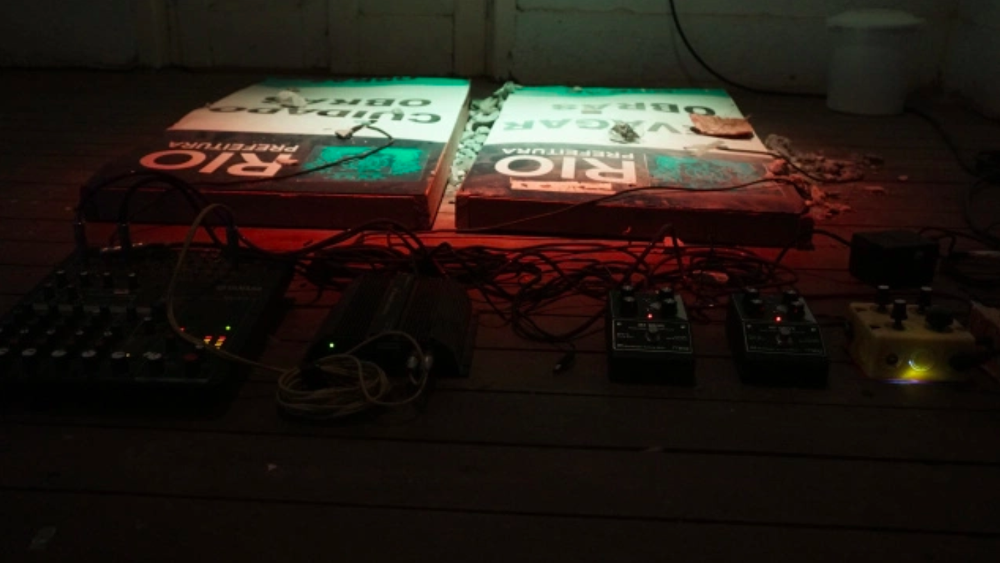
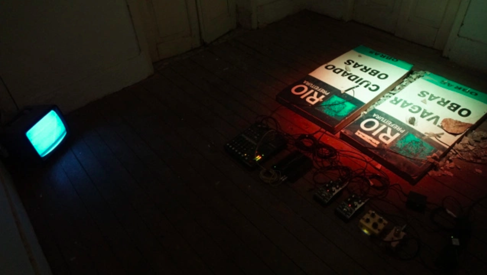

O abalo sísmico foi pensado enquanto força motriz da natureza capaz de despertar as sonoridades adormecidas nos corpos humanos e não humanos presentes na paisagem que nos cerca . Imagine um tremor de terra, nessa ocasião todos os objetos presentes em uma mesa começam a vibrar e produzir seu próprio som característico, de acordo com sua forma, material, peso. Essa seria uma música generativa provocada pela natureza, a superfície da terra como uma enorme percussão viva .
A instalação artística abalo sísmico tenta reproduzir a dinâmica sonora deste fenômeno, e problematizar através dessa metáfora as obras públicas que atravessavaram o cotidiano do Rio de Janeiro pré-olímpico, como trepidações, demolições e remoções . Para isso, duas placas de metal foram posicionadas sobre alto falantes, e nos alto falantes um oscilador enviava frequências sonoras graves, criando um efeito físico cujo o som grave provocava tremor na superfície de metal. Sobre a superfície foram colocados fragmentos de concreto e vidro, de maneira que o tremor provoca trepidação entre esses elementos, revelando suas propriedades audíveis .
Os pedaços de concreto se chocam com o vidro e com o metal em uma saga cinética de sons imprevisíveis, em uma composição sonora infinita. Foi aplicado nas placas, microfones de contato para amplificar o acontecer audível, e essa captação era enviada para processadores de áudio analógicos que, depois de processados manualmente retornava aos falantes posicionados debaixo das placas provocando um labirinto sonoro .
por Anastácio e Bella no contexto da residência casa comum
 